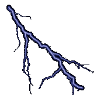

En kalkulator som tar utgangspunkt i NEK400:2010 §27.

Betegnelser:
Ib = Belastningsstrøm
In = Vern/Sikringsstørrelse
Iz = Strømføringsevne (f.eks. 1,5mm2<=10A, 2,5mm2<=16A)
I2 = Strømverdi som gjør at vern slår ut etter 60 min.
I5 = Strømverdi som gjør at vern slår ut umiddelbart.
Ib <= In <= Iz
Hold vern over belastning men under total strømføringsevne.
Spenningsfall i kobberleder: NEK400:2010 §27 anbefaler maks 4% spenningsfall totalt på forbrukerutstyr.
Særlige anbefalinger er 2% på hovedkurser, 4-5% på lysanlegg og motorkurser, 5-6% totalt for andre forbrukerkurser.
Dette for bl.a. å sikre mot for lite kortslutningsstrøm og at utstyr får spenning etter spesifikasjoner.